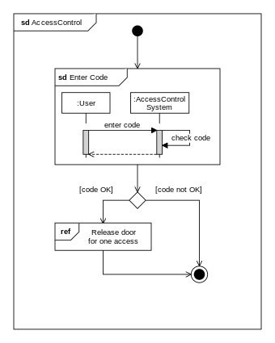

UML diagrammid
Structure
Package Diagrams
- Package diagrams tarkvaraarenduses kujutavad erinevate elementide korraldust ja paigutust süsteemis.
- Need näitavad visuaalselt, kuidas erinevad klassid, komponendid ja muud elemendid on grupeeritud loogilisteks üksusteks või pakettideks.

Class Diagrams
- Class diagrams on objektorienteeritud modelleerimise põhivahend, mis kujutavad süsteemi struktuuri.
- Arendus toimub disainielementide põhjal, mida peetakse esmatähtsaks, ning seejärel rakendatakse vastavalt.
Deployment Diagrams
- Deployment Diagrams visualiseerivad tarkvarakomponentide füüsilist paigutust arvutuskeskkonnas.
- Need kujutavad riistvara sõlmi, tarkvarakomponente ja nende omavahelisi seoseid hajusüsteemis.

Object Diagrams
- Object Diagrams annavad hetktõmmise süsteemi instantsidest konkreetsel hetkel.
- Need kujutavad reaalajas süsteemi olekut, sealhulgas konkreetseid klassi instantside ja nende seoste näiteid.

Component Diagrams
- Component Diagrams esitavad süsteemis olevate komponentide korraldust ja sõltuvusi.
- Need aitavad süsteemi disainida modulaarselt, soodustades taaskasutust ja keerukuse haldamist.
Composite Structure Diagrams
- Composite Structure Diagrams modelleerivad klassi või komponendi sisemist struktuuri.
- Need illustreerivad keeruka struktuuri sees toimuvaid koostöö- ja koostamissuhteid.

Behaviour
Activity Diagrams
- Activity Diagrams kirjeldavad protsessis kontrolli voogu või tegevuste järjestust süsteemis.
- Need esindavad olekuid, tegevusi, otsuseid ja üleminekuid ülesande täitmise või eesmärgi saavutamise käigus.

Use Case Diagrams
- Use Case Diagrams jäädvustavad süsteemi funktsionaalsed nõuded, kujutades suhtlust kasutajate ja süsteemi vahel.
- Need lihtsustavad nõuete kogumist, valideerimist ja suhtlust osapoolte vahel, andes selge arusaama süsteemi funktsionaalsusest.

Sequence Diagrams
- Sequence Diagrams kujutavad objektide või komponentide vahelisi suhteid ja sõnumivahetust süsteemis ajas.
- Need aitavad mõista keeruliste süsteemide juhtimis- ja suhtlusvoogusid ning aitavad disainil, analüüsil ja veateateil.

Timing Diagrams
- Timing Diagrams illustreerivad süsteemis ajasignaalide, sündmuste või olekute ajalisi seoseid.
- Need on eriti kasulikud reaalajasüsteemide, integreeritud süsteemide või täpse ajajuhtimisega süsteemide jaoks, aidates tõhusust analüüsida ja kinnitada.
Communication diagrams
- Communication diagrams visualiseerivad objektide või komponentide vahelisi suhteid ja suhtlust süsteemis.
- Need keskenduvad objektide struktuurilisele organisatsioonile ja nende vahel vahetatavatele sõnumitele, aidates mõista süsteemi koostoimimist ja suhtlemist.
Interaction Overview Diagrams
- Interaction Overview Diagrams pakuvad ülevaadet erinevate interaktsioonide või stsenaariumide juhtimisest süsteemis.
- Need ühendavad elemente tegevusdiagrammidest ja järjestusdiagrammidest, et kujutada juhtimisvoogu erinevate tegevuste või interaktsioonide vahel, aidates selgust ja suhtlust osapoolte vahel.
